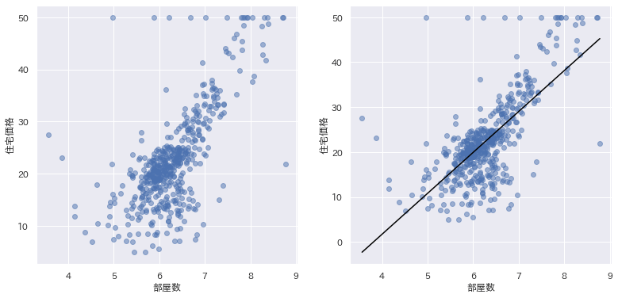
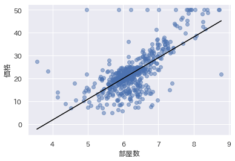
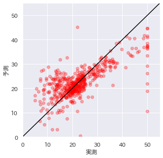

回帰分析#
今回は、回帰分析に取り組み、本格的な統計学手の手法を学んでいきます。 ハンズオン演習のデータセットは、前回までの同じボストン住宅価格データセットを使います。
準備#
まず、前回の演習内容を思い出して、ボストン住宅価格データセットをdfに読み込んでください。
回帰分析#
前回、散布図と相関係数の求め方を学びました。 最後に、強い相関がある散布図にピッともっともらしい直線()を引く方法を紹介しました。

最小二乗法の原理はさておき、 もっともらしい直線に近似する ところまでは、そういうものかなと理解できたと思います。
実は、このようにに近似するのは、 線形回帰(Linear Regression) と呼ばれます。

説明変数と目的変数#
回帰分析やこれ以降の機械学習では、 のように関係を表す式をモデル、 を説明変数、を目的変数と呼びます。
- 説明変数: モデルの特徴を説明するための変数
- 目的変数: モデルの対象となる変数
データ列の中からひとつの説明変数を選んで、回忌分析を行うことを 単回帰分析 と呼びます。
説明変数は、２つ以上選ぶことができます。 ２つ以上の回帰分析は、重回帰分析 と呼ばれます。
説明変数はモデルの特徴をうまく表す変数になります。 もちろん、３つやそれ以上の説明変数を選んでも構いません。
選んだ説明変数の数を 次元(dimension) と呼びます。 ２次元以上の説明変数は、ベクトルとして計算されます。
回帰分析を行う#
回帰分析は、
sklearnモジュールのsklearn.linear_model.LinearRegressionを用います。
modelに対して、fit()メソッドで、
説明変数Xと目的変数yを与えると、
内部では最小二乗法を用いて、モデルを算出します。
まずは、単回帰モデルを作ってみましょう。
機械学習とは
機械学習とは、データを与えることで、そのデータに適合したモデルを得ることです。
適合された回帰モデルから係数(a)と切片(b)を得ることができます。
つまり、数式で表すと、次のような直線になります。
モデルと予測#
回帰分析は、一旦、モデルが構築されると、価格が予想できるようになります。
次のように、y_predを求めると、
全ての説明変数Xから
学習したモデルから予測された住宅価格をデータ列で
得ることができます。
回帰モデルからの予測値
print(y_pred)の実行結果(抜粋)
plt.scatter(df['部屋数'], df['価格'], alpha=0.5)
plt.plot(df['部屋数'], y_pred, color='black')
plt.xlabel('部屋数')
plt.ylabel('価格')
plt.show()

線形回帰は予測モデル
実は、回帰分析でもっともらしい直線を近似することは、 説明変数から目的変数を予測可能にするモデルを作ることになります。 これは、機械学習やAIで正に目指していることです。
回帰モデルはどの程度正確なのか？#
学習されたモデルによる予測は、どの程度、正確なのでしょうか？
学習された回帰モデルを使って、価格を予測して、実際の住宅価格（正解）と比較してみましょう。
やはり、データ列を比較するだけではわかりにくいので、散布図で視覚化してみます。

なんか高価格帯()がうまく予測できていない気がします。
残差
残差とは、実測値と予測値の差です。 回帰モデルは、残差が正規分布になっているのが望ましいと言われています。
定量的な評価尺度#
学習されたモデルの正確さは、実測値と予測値の散布図や残差ヒストグラムで視覚的に確認できます。 しかし、正確さを定量的に測れた方が便利です。 そのような回帰モデルを定量的に評価する尺度として、MSE と決定係数 が使われます。
MSE
平均二乗誤差 (Mean Squared Error) とは、実際の値と予測値の絶対値の2乗を平均したものです。 値が大きいほど誤差の多いモデルと言えます。計算式は以下となります。
この式は、最小二乗法に用いた誤差を平均化したものです。 小さいほど、もっともらしい直線というのは直感に反しません。 ただし、目的変数の分散が大きい場合は、MSEも大きくなります。
sklearn モジュールの sklearn.metrics.mean_squared_error は、MSEを求める関数です。以下のように利用できます。
from sklearn.metrics import mean_squared_error
mse = mean_squared_error(y, y_pred)
print('MSE:', mse)
決定係数
決定係数 (R2, R-squared, coefficient of determination) は、MSEを使って、予測モデルの当てはまりの良さを示す指標です。寄与率とも呼ばれます。
最も当てはまりの良い場合、つまり誤差のない場合、1.0 となります。 (当てはまりの悪い場合、マイナスとなることもあります)。MSEと異なり、目的変数の分散に依存しないため、目的変数のスケールが異なっても一般的な指標となります。
実行結果重回帰#
重回帰分析は、二つ以上の説明変数を選びます。
Let's try
住宅価格に影響を与えそうなデータ列（説明変数）をふたつ選んでみよう。
不動産のプロフェッショナルではありませんから、何が影響するか、わかりません。
とりあえず、僕の経験から '通勤'と'教員'辺りが影響を与えるのではないかと睨んで、
説明変数に選んでみました。
みなさんが、選んだ説明変数に変えて試してみてください。
仮説と検証#
データサイエンスの目的のひとつは、仮説検証によるより精度の高い予測モデルを作成することです。
ボストン住宅価格データセットには、部屋数や犯罪率など色々なデータが入っています。 データを傍観するときは、色々な仮説を立てながらみるようにしましょう。
例
- 部屋数が増えると価格上がりそうだな..
- 犯罪率が高いと住宅価格は下がりそうだな..
- 環境汚染は住民にはわかりにくいので、住宅価格に影響しないだろうなど
このような仮説を立てて、仮説検証をするのはデータ分析の醍醐味です。
データ分析と可視化を駆使して、住宅価格に影響を与える説明変数を分析していきます。
ヒントは相関#
説明変数の候補を調べるときにヒントとなるのが、目的変数との相関です。
仮説:「犯罪率が高ければ住宅価格が低くなりそうだな」
仮説(2): 部屋数が多いほど価格が高くなりそうだな
sns.jointplot(x='部屋数', y='住宅価格', data=df)
corr = pearsonr(df['部屋数'], df['住宅価格'])
print('ピアソン相関係数:', corr[0])
print('p値:', corr[1])
sns.kdeplot(data=df, x="工場", y="住宅価格", shade=True, thresh=0.05)
corr = pearsonr(df['工場'], df['住宅価格'])
print('ピアソン相関係数:', corr[0])
print('p値:', corr[1])
めんどくさいので、全部見てみましょう！
cor=df.corr()
plt.figure(figsize=(20,10))
sns.heatmap(cor[(cor >= 0.4) | (cor <= -0.4)], annot=True, cmap='Blues')
fig, ax = plt.subplots(round(len(df.columns) / 3), 3, figsize=(18, 18))
fig.subplots_adjust(hspace=0.5) # 間隔を調整
for i, ax in enumerate(fig.axes):
if i < len(df.columns) - 1:
sns.regplot(x=df.columns[i], y='住宅価格', data=df[df.columns], ax=ax)
目的変数の分布を見る#
まずは、目的変数の分布を見るのが良いでしょう。
目的変数が正規分布でない!!
統計学をしっかり学んでいないと、困ったことになります。 https://toukeier.hatenablog.com/entry/2019/09/08/224346
全てのパラメータを説明変数#
重回帰分析は、複数の説明変数を扱うことができるので、価格以外の全てのデータ列を説明変数にして、回帰モデルを作ることができます。
y = df['価格']
print(df.columns[:-1])
X = df[df.columns[:-1]] # 価格以外の全て
model=LinearRegression()
model.fit(X,y)
y_pred = model.predict(X)
plt.scatter(y, y_pred, c = 'red', alpha=0.3)
print("MSE: ", mean_squared_error(y, y_pred) )
print('R2', r2_score(y, y_pred))
演習問題#
'住宅価格'を目的変数として、回帰分析してみよう。
- 単回帰分析で、決定係数(R2)が最大になる説明変数を探してみよう。
- 重回帰分析で、決定係数(R2)が最大になる説明変数を２つ探してみよう。
- 自分なりに仮説を立てて３つの説明変数を選び、 重回帰モデルの決定係数(R2)から選んだ説明変数が住宅価格の特徴をよく説明しているか考察してみよう。
考察をするときは、相関係数を意識すると良いでしょう。
特に、重回帰モデルでは、説明変数の組み合わせによっては、 多重共線性(multi-colinearlity、和製英語: マルチコ) が生じることがあり、説明力が低下します。 つまり、単純に相関が高い説明変数を選ぶだけではうまくいかないこともあります。
マルチコにはご注意
マルチコへの対応は分野によって異なります。 * 統計学的には、放置してはいけない * 機械学習的には、モデルの説明力を低下させるものの、予測精度にあまり影響を与えない
また、説明変数を全て入れると、一見、最もよい回帰モデルが作れそうな気がします。 次回の予習として、全説明変数の重回帰モデルも作って、考察に加えてみてください。